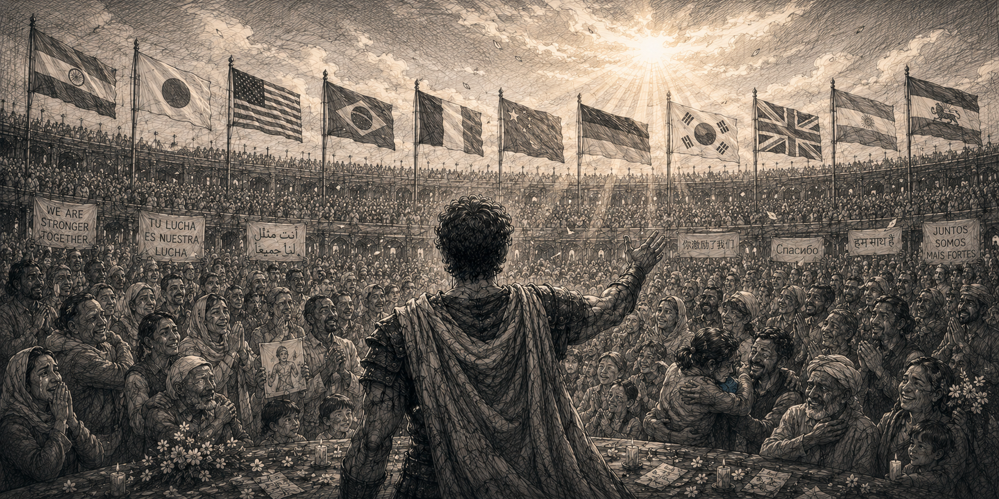

Depth Builds Emotional Loyalty

Last night, Brazil and Morocco battled under the lights of MetLife Stadium in the 2026 FIFA World Cup group stage. What makes the World Cup powerful is what the sport represents. People stay emotionally invested when a thing starts to carry a piece of who they are. They do not stay for what it does. They stay for who it lets them be.
Researchers studied this exact instinct. In a 1976 paper in the Journal of Personality and Social Psychology, Robert Cialdini and his colleagues observed students at major football universities and found they were more likely to wear school-identifying apparel after a win. In follow-up experiments, students used the word "we" more often when describing a victory than a loss, even though they had no role in the outcome. Cialdini called this basking in reflected glory. People borrow emotional meaning from groups they identify with. That is the World Cup in its purest form. Fans were not just watching Brazil or Morocco. For a moment they were attaching their own memory, family, country, and pride to what happened on the field. The same instinct gets pointed at a creator, a company, or a product.
A national team gets all of this for free. The history, the flag, the shared memory, the border that fans had no part in drawing, are in place before the first whistle. A creator inherits none of it. They have to earn it, and earning it takes time. The question is what actually does the earning.
The first thing to understand is that attention and depth are not two sizes of the same thing. Attention is borrowed. A headline holds a stranger for a few seconds, a hot take gets shared and forgotten by the next day. All of it can be huge and none of it means a single person cares. Being seen is not the same as being trusted. Attention produces a viewer. Depth produces someone who feels involved, the same shift Cialdini's students made when they stopped saying "the team" and started saying "we."
Gary Vaynerchuk understood this before most people had a word for it. In 2006 he set up a cheap camera in the back of his dad's New Jersey liquor store, sat down, and started talking about what was on the shelves. No studio, no script, a few hundred viewers on a good day. He filmed more than a thousand episodes. Recently on Daniel Wall's podcast he was asked what creators should do once they have figured out how to capture attention. The expected answer was more hooks, tighter edits, better packaging. His answer was depth. He trashed wines his own family sold, on camera, because a single sale was worth less to him than the trust of someone who would come back for a decade. He grew that store from a few million dollars in revenue to roughly sixty. The reviews were the product. The trust was the business.
A product gets powerful when people stop being reminded to use it and start building their lives around it.
No company has done that more completely than Apple.
Tim Cook is a large part of why that held. He scaled the iPhone into the engine of the business, then stacked the ecosystem around it: Apple Watch, AirPods, Services, Apple Silicon. When he took over in 2011, Apple was worth around $350 billion. Today it is worth roughly $4 trillion. His legacy is not one magical device. It is that Apple became unavoidable in ordinary life.
WWDC 2026 was Cook's final keynote as CEO. He spoke about the privilege of putting powerful tools in people's hands and watching what they create, returned to the line he has used for years about products that enrich people's lives, and told the room he believes the best is still ahead.
Across every medium, this is what I call loyalty.